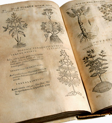
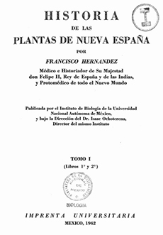

Referencias
- Casas A. G. 2004. Nuevas interpretaciones y adiciones a los anfibios y reptiles en la obra del naturalista Francisco Hernández (1517-1584). Ciencia Ergo Sum 11(003): 308-312.
- Esteva de Sabrera J. 2005. Historia de la farmacia: los medicamentos, la riqueza y el bienestar. Masson. Barcelona, España. 472 pp.
- Hernández F. 1943. Historia de las plantas de Nueva España. Universidad Nacional Autónoma de México. Imprenta Universitaria México. México, D.F.
- Herrera T. y A. Butanda. La botánica en México. ECM=COSMOS. La Enciclopedia de las Ciencias y la Tecnología en México.
- López P. J. M. 1991. El Códice Pomar (ca. 1590): El interés de Felipe II por la historia natural y la expedición Hernández a América. Instituto de Estudios documentales e históricos sobre la ciencia Universidad de Valencia. 128 pp.
- Mazín O. 2007. Iberoamérica: Del descubrimiento a la independencia. El Colegio de México, 332 pp.
- UNAM. 2015. Obras completas de Francisco Hernández en la UNAM. Universidad Nacional Autónoma de México, México.
Francisco Hernández de Toledo
1517 – 1587
Nací en la ciudad de Puebla de Montalbán, cerca de Toledo, en 1517. Estudié medicina en la Universidad de Alcalá, en la ciudad de mi famoso contemporáneo Miguel de Cervantes Saavedra (1547-1616). Ejercí la medicina por varios años en las ciudades de Toledo y de Sevilla. Más tarde en 1567 me convertí en médico de la corte del rey Felipe II (1527-1598). El rey me eligió para dirigir una de las numerosas expediciones organizadas por la corona para conocer la riqueza natural de las colonias americanas. Fui nombrado con el largo título de “Protomédico general de todas las Indias, islas y tierra firme del Mar Océano”.
Cumplidos los 53 años partí en 1570 de Sevilla, con mi hijo Juan, a la Nueva España. Para ese entonces, era yo viudo y tuve que dejarlas a vivir en el convento de San Juan de la Penitencia de Toledo. El viaje se consideraría la primera expedición científica de la Edad Moderna. Hicimos paradas en las Islas Canarias, en la isla Española (hoy Santo Domingo) y en Cuba y llegamos a Veracruz en 1572 después de tres meses de viaje. Por tres años recorrimos principalmente la meseta central, Oaxaca, Michoacán, Pánuco, documentando plantas y animales. Hice una colección, estudié los efectos curativos de las plantas, las describí y anoté los usos que les daban los indígenas. Describí alrededor de 3,000 especies de plantas y 400 especies de animales. Los indígenas pintores Baptized Antón, Baltazar Elías y Pedro Vázquez me ayudaron con las ilustraciones de plantas y animales.
Durante la primera pare de la expedición, exploré la zona central, los alrededores de Tenochtitlán y lo que ahora es Morelos, Estado de México, Tlaxcala e Hidalgo. Después hice un viaje por las selvas secas de las costas de Guerrero y Oaxaca y por los valles centrales de Oaxaca. Más tarde viaje por Michoacán, por el Pánuco, Hidalgo, San Luis Potosí, Puebla y finalmente por Taxco, Querétaro y Guanajuato.
A partir de 1574 me establecí en la ciudad de México para realizar trabajos experimentales. También analicé las tradiciones de los indígenas, la geografía, el clima y realicé estudios arqueológicos. Durante mi estancia recorrí casi la totalidad de los territorios descubiertos de la colonia hasta entonces, recolectando un sinnúmero de plantas, animales y minerales, los cuales dieron lugar a la descripción de 1,200 especies. Envié gran parte de este material a la Corona, incluyendo mis valiosos manuscritos así como numerosas pinturas de plantas y animales.
En esos tiempos, en el Colegio de Santa Cruz de Tlatelolco se enseñaba a los indígenas pero también se aprendía todo su conocimiento tradicional. El fraile franciscano Bernardino de Sahagún, recopiló muchísima información en ese recinto. También ahí trabajó el médico indígena Martín de la Cruz, escribiendo un libro sobre plantas medicinales. En 1577 regresé a España después de la ardua expedición en la flota del almirante Diego Maldonado de Mendoza. Regresé enfermo y deteriorado y fallecí en Madrid diez años más tarde.
Durante mi vida no se publicó nada, fue después de mi muerte cuando mis manuscritos y copias de éstos se editaron y publicaron en 17 volúmenes bajo la magna obra titulada “Tesoro de las Cosas Medicinales de la Nueva España”. La parte botánica de este trabajo también se editó y publicó como “Historia de las plantas de la Nueva España”. Muchos de mis manuscritos se perdieron durante el incendio de 1672 del monasterio El Escorial, situado al noroeste de Madrid.
Después de nuestra expedición a la Nueva España, hubo tres expediciones científicas más de gran importancia: 1. La expedición a los Reinos del Perú y Chile (1777-1788), dirigida por los botánicos Don Hipólito Ruiz y Don José Pavón. 2. La Real Expedición Botánica del Nuevo Reino de Granada (Colombia) dirigida por el médico Don José Celestino Mutis (1783-1813). 3. La Real Expedición Botánica a la Nueva España (1787-1803) del médico Martín de Sesse y Lacasta y de José Mariano Mociño, diseñada para ilustrar y completar el trabajo que yo había hecho 200 años antes.
Mis favoritos

- Cuatro libros de la naturaleza y virtudes de las plantas y animales de uso medicinal en la Nueva España. Francisco Hernández de Toledo. Biblioteca digital mundial.
Mis lugares
Mis ideas
- 
- Historia de las Plantas de la Nueva España. Francisco Hernández. Publicación del el Instituto de Biología de la Universidad Nacional Autónoma de México